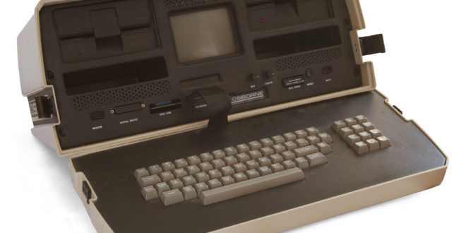

The fascinating world of mobile computing has only been around since the 1990s. Since then, devices that have been developed for mobile computing have taken over the wireless industry. This new type of communication is a very powerful tool for both businesses and personal use. Mobile computing is defined as the ability to use technology that is not physically connected to any static network. This actually used to mean radio transmitters that operated on a stable base, usually with the help of large antennas. 2 way radios used by police officers were also considered mobile technology but now, it means people can connect wirelessly to the internet or to a private network almost anywhere. As long as a person has one of the devices capable of wirelessly accessing the internet, they are participating in mobile computing. Chances are, you have done it with a laptop computer or a personal digital assistant or PDA.
These days, most laptops and personal digital assistants all have wireless cards or Bluetooth interfaces built into them for convenient mobile internet access. Mobile solutions are right under everyone’s nose these days, and connectivity has never been easier. Other common tools for mobile computing include devices like global positioning systems and smart phones like the Cingular Blackberry. Tons of PDA software development has been going on in the past five years simply because companies have been trying hard to make PDA technology more available to the general public. These days, software companies almost make more software for PDAs and smart phones than for actual desktops.